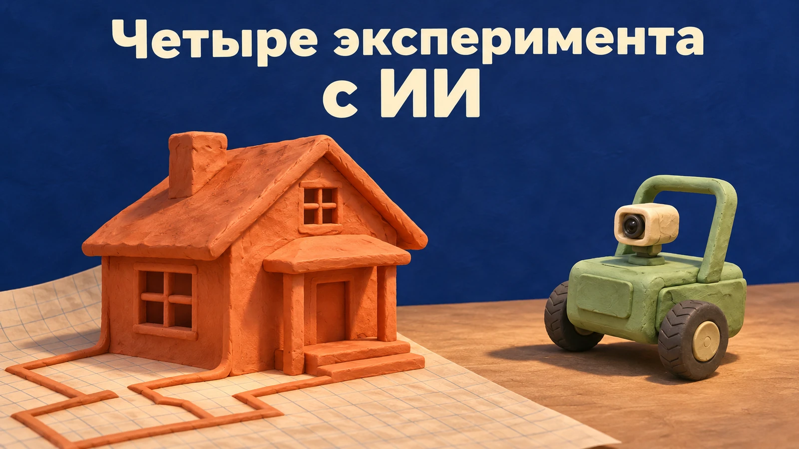

Сделано с ИИ
Игры, фильмы, виртуальные миры, музыка и изобретения людей, созданные с помощью нейросетей. Проверяем, что авторы действительно показали.
Публикации — 4

Четыре эксперимента с ИИ: создатель Elona сделал игру за три часа, а нейросеть стала стримером
24 ноября 2026 · 19:45Четыре игровых эксперимента: автор Elona сделал игру с Claude за три часа, другой разработчик создал сказку на 14 глав, третий — браузерную игру в духе Dark Souls, а четвёртый — виртуального стримера.

Четыре необычных эксперимента с ИИ: от проектирования дома до управления роботом
24 ноября 2026 · 18:45Четыре авторских эксперимента с ИИ: агенты проектируют дом, камеры наблюдают за рестораном, Claude пишет код для роборуки и нажимает аппаратную кнопку перезагрузки.
Зомби сыграли нейросети: 30 серий без единого живого актёра
22 ноября 2026 · 19:15Студия Mansa выпустила 30-серийный зомби-хоррор с персонажами, созданными ИИ. Сооснователь Нейт Паркер объяснил, почему компания использует такие сериалы для проверки спроса перед возможными съёмками с актёрами.

Аналог Photoshop за сутки: разработчик показал, что собрал с ИИ
22 ноября 2026 · 16:45На конференции AI Engineer CODE основатель ArtCraft рассказал, как команда за сутки создала с помощью ИИ первый прототип PhotoCraft — открытого аналога Photoshop. Сейчас команда оценивает функциональность примерно в 60% от оригинала.